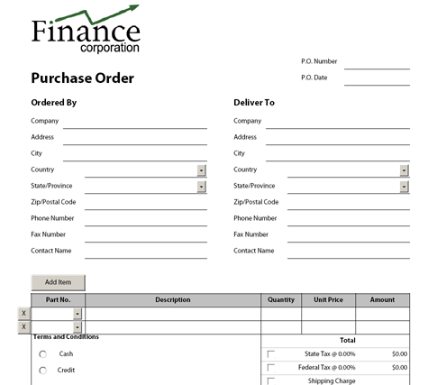

11a.7.1 XFA Overview
A traditional PDF form contains annotation objects representing form fields.
Adobe LifeCycle Designer 7.0+ introduced a new generation of forms called XFA,
which stands for XML Forms Architecture. Under XFA, a form layout is defined by an XML document, called template,
describing subforms, fields, static text, fonts, images and other elements of the form.
Below is the screenshot of a very simple template containing a submit button, two text fields, and two mutually exclusive radio buttons.
To save screen space, most of the XML nodes of that template are shown in a collapsed state:
The content of the form fields is also packaged as an XML document called dataset. Both the template and dataset (as well as other information in XML format)
are embedded in a PDF document. A form viewer application such as Adobe Reader merges and template and dataset together
using a well-defined set of rules and produces a filled-out form.
Even a blank XFA form usually contains a property structured XML-based dataset, but this XML document just contains empty values.
For example, the initial dataset for the form shown above looks as follows:
If the dataset sheet is filled with values, such as
...
<TextField1>Text value 1</TextField1>
<TextField2>Text value 2</TextField2>
...
and plugged back into the PDF form, the fields will contain the specified values when the form is viewed.
One important advantage of the XFA architecture over traditional PDF forms is that is enables dynamically growing forms,
while the traditional forms are inherently static.
The Adobe XFA format is extensive. Version 3.3 of the XFA specifications is a 1,585-page document. It is available on the Adobe web site
and can be downloaded from here.
11a.7.2 AspPDF's XFA Support
AspPDF's support for XFA forms is streamlined: it enables the template and dataset data to be retrieved from a PDF form, and
it also enables the modified dataset data to be plugged back into the PDF form. AspPDF provides no functionality for XML parsing and creation
but fortunately both classic ASP and .NET provide ample built-in support for XML management.
AspPDF's XFA functionality is encapsulated in the PdfForm object
via the read-only property XFATemplate and read/write property XFADatasets (note the plural form of the word "datasets".) Also, there is
an auxiliary property HasXFA which returns True if the PDF form contains XFA data. If this property returns False, the form contains no XFA information
and the XFATemplate and XFADatasets properties cannot be used.
The online retrieval of the template and dataset of a PDF form is implemented by Live Demo #15.
To demonstrate AspPDF's XFA functionality, a sample PDF purchase order form shipped with Adobe LiveCycle Designer, Purchase Order.pdf, will be used.
It can be found under the \Samples\manual_11 subfolder of the installation.

This form contains all major types of fields: text boxes, radio boxes, drop-down lists, checkboxes, and a dynamically growing
list of items. This form's dataset which can be retrieved using Live Demo #15 looks as follows:
Our code sample will fill out the following fields: PO Number (<txtPONum>), Ordered by Company (<txtOrderedByCompanyName>),
a Terms and Conditions radio box(<TermsConditions>), the State Tax checkbox (<chkStateTax>) and State Tax Rate (<numStateTaxRate>).
It will also add three purchase order items to the item list (<detail>).
The valid values for a radio button group (1 for cash and 2 for credit in our example)
can be obtained from the form's template. The relevant snippet of the template (simplified for better readability) is shown below:
<exclGroup name="TermsConditions" x="4.7513mm" y="5.08mm">
<field...>
<caption>
<value>
<text>Cash</text>
</value>
</caption>
<items>
<integer>1</integer>
</items>
</field>
<field...>
<caption>
<value>
<text>Credit</text>
</value>
</caption>
<items>
<integer>2</integer>
</items>
</field>
</exclGroup>
| VBScript |
|
Set PDF = Server.CreateObject("Persits.PDF")
' Open an XFA form
Set Doc = PDF.OpenDocument( Server.MapPath( "Purchase Order.pdf" ) )
' Check if the form contains XFA data
If Not Doc.Form.HasXFA Then
Response.Write "This form contains no XFA information."
Response.End
End If
' Load XFA dataset from the PDF form to Microsoft XML processor object
Set Xml = Server.CreateObject("Microsoft.XMLDOM")
Xml.Async = False ' need synchronous operation
Xml.LoadXml( Doc.Form.XFADatasets )
' Fill PO number
Set Node = Xml.DocumentElement.SelectSingleNode ("/xfa:datasets/xfa:data/form1/header/txtPONum")
Node.text = "1234456577"
' Fill Ordered By Company
Set Node = Xml.DocumentElement.SelectSingleNode ("/xfa:datasets/xfa:data/form1/header/txtOrderedByCompanyName")
Node.text = "Acme, Inc."
' Fill Terms and Conditions: 1 for cash, 2 for credit
Set Node = Xml.DocumentElement.SelectSingleNode ("/xfa:datasets/xfa:data/form1/total/TermsConditions")
Node.text = "2"
' Fill State Tax checkbox and state tax rate of 8.5%
Set Node = Xml.DocumentElement.SelectSingleNode ("/xfa:datasets/xfa:data/form1/total/chkStateTax")
Node.text = "1"
Set Node = Xml.DocumentElement.SelectSingleNode ("/xfa:datasets/xfa:data/form1/total/numStateTaxRate")
Node.text = "8.5"
' Add purchase order items
' First, delete two existing detail nodes under form1
Set Node = Xml.DocumentElement.SelectSingleNode("/xfa:datasets/xfa:data/form1")
Node.RemoveChild Xml.getElementsByTagName("detail")(0)
Node.RemoveChild Xml.getElementsByTagName("detail")(0)
' Add three new detail nodes
For i = 1 To 3
Set Detail = Xml.createElement("detail")
Set Subdetail = Xml.createElement("txtPartNum")
Subdetail.text = "PART#" & i
Detail.appendChild Subdetail
Set Subdetail = Xml.createElement("txtDescription")
Subdetail.text = "Description #" & i
Detail.appendChild Subdetail
Set Subdetail = Xml.createElement("numQty")
Subdetail.text = 5 * i
Detail.appendChild Subdetail
Set Subdetail = Xml.createElement("numUnitPrice")
Subdetail.text = 100 * i
Detail.appendChild Subdetail
Node.insertBefore Detail, Xml.getElementsByTagName("total")(0)
Next
' Plug the dataset back to the PDF form
Doc.Form.XFADatasets = Xml.xml
'Save document
Path = Server.MapPath( "xfaform.pdf")
FileName = Doc.Save( Path, false)
|
| C# |
|
XmlNode Node;
IPdfManager objPdf = new PdfManager();
// Open an XFA form
IPdfDocument objDoc = objPdf.OpenDocument( Server.MapPath( "Purchase Order.pdf" ), Missing.Value );
// Check if the form contains XFA data
if( !objDoc.Form.HasXFA )
{
lblResult.Text = "This form contains no XFA information.";
return;
}
// Load XFA dataset from the PDF form to Microsoft XML processor object
XmlDocument Xml = new XmlDocument();
Xml.LoadXml( objDoc.Form.XFADatasets );
XmlNamespaceManager Mgr = new XmlNamespaceManager(Xml.NameTable);
Mgr.AddNamespace("xfa", "http://www.xfa.org/schema/xfa-data/1.0/");
// Fill PO number
Node = Xml.DocumentElement.SelectSingleNode("/xfa:datasets/xfa:data/form1/header/txtPONum", Mgr);
Node.InnerText = "1234456577";
// Fill Ordered By Company
Node = Xml.DocumentElement.SelectSingleNode("/xfa:datasets/xfa:data/form1/header/txtOrderedByCompanyName", Mgr);
Node.InnerText = "Acme, Inc.";
// Fill Terms and Conditions: 1 for cash, 2 for credit
Node = Xml.DocumentElement.SelectSingleNode("/xfa:datasets/xfa:data/form1/total/TermsConditions", Mgr);
Node.InnerText = "2";
// Fill State Tax checkbox and state tax rate of 8.5%
Node = Xml.DocumentElement.SelectSingleNode("/xfa:datasets/xfa:data/form1/total/chkStateTax", Mgr);
Node.InnerText = "1";
Node = Xml.DocumentElement.SelectSingleNode("/xfa:datasets/xfa:data/form1/total/numStateTaxRate", Mgr);
Node.InnerText = "8.5";
// Add purchase order items
// First, delete two existing detail nodes under form1
Node = Xml.DocumentElement.SelectSingleNode("/xfa:datasets/xfa:data/form1", Mgr );
Node.RemoveChild( Xml.GetElementsByTagName("detail")[0] );
Node.RemoveChild( Xml.GetElementsByTagName("detail")[0] );
// Add three new detail nodes
for( int i = 1; i <= 3; i++ )
{
XmlNode Detail, Subdetail;
Detail = Xml.CreateElement("detail");
Subdetail = Xml.CreateElement("txtPartNum");
Subdetail.InnerText = "PART#" + i.ToString();
Detail.AppendChild( Subdetail );
Subdetail = Xml.CreateElement("txtDescription");
Subdetail.InnerText = "Description #" + i.ToString();
Detail.AppendChild( Subdetail );
Subdetail = Xml.CreateElement("numQty");
Subdetail.InnerText = (5 * i).ToString();
Detail.AppendChild( Subdetail );
Subdetail = Xml.CreateElement("numUnitPrice");
Subdetail.InnerText = (100 * i).ToString();
Detail.AppendChild( Subdetail );
Node.InsertBefore( Detail, Xml.GetElementsByTagName("total")[0] );
}
// Plug the dataset back to the PDF form
objDoc.Form.XFADatasets = Xml.InnerXml;
// Save document
string Path = Server.MapPath( "xfaform.pdf");
string FileName = objDoc.Save( Path, false);
|
Click the links below to run this code sample:
http://localhost/asppdf/manual_11/11_xfa.asp
http://localhost/asppdf/manual_11/11_xfa.aspx

The resultant PDF form looks as follows: